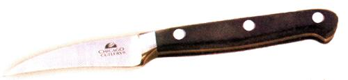

COUNTRY LORE
Hands down, my most commonly used kitchen knife is the 3- to 4-inch blade paring knife. Most kitchens have several, typically in various states of disrepair with water damaged handles and abused blades. One of mine has enough nicks, I consider it a serrated knife.
I had been window shopping for a set of fine German knives. In spite of a well known cheap streak, I do appreciate quality tools. This purchase was going to seriously nick the family budget. It was also going to take a while. (I don't care for credit card debt.) I had just about had it with our current selection of parers. It was time for yet another inexpensive, Brand X, temporary parer. What I found this time was something else.
The best cheap kitchen knife I have ever used.
Let me now recommend Chicago Cutlery's New Centurion paring knife. It has everything I expect out of a fine German knife. The 3f-inch blade is high carbon stainless steel with full visible tang construction. This is quality steel that takes and holds a keen edge. Remarkably enough it is also easy to resharpen. Handles are also important. These are Bakelite plastic securely attached with stainless steel rivets. They are attractive, durable and hygienic. The knife's overall balance is superb.
This is just what I expect of a fine German knife from an upscale department store or kitchen boutique. I just didn't expect it of an S8 knife at a discount store.
GEORGE BURNETT
Spartanburg, South Carolina
Have you learned some trick of the trade, secret formula or way to avoid disaster around the homestead? Please share with our readers. We'll give you a T-shirt if we use your tip. Send info, with photos please, to Country Lore at Mother Earth News; 1503 SW 42nd St.; Topeka, KS 66609-1265. - MOTHER
|
 |
|
|